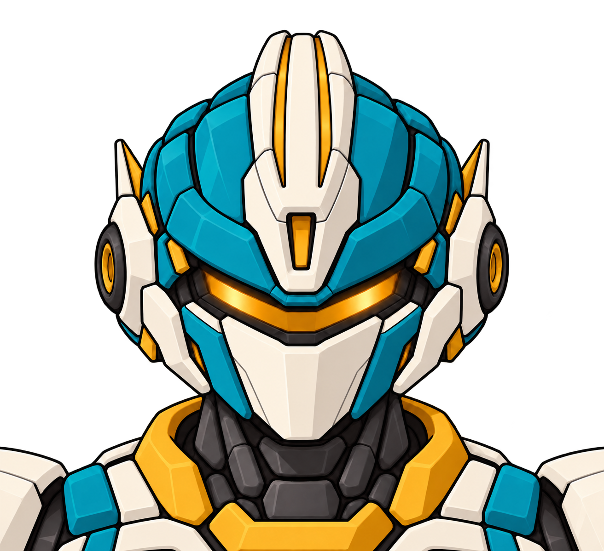
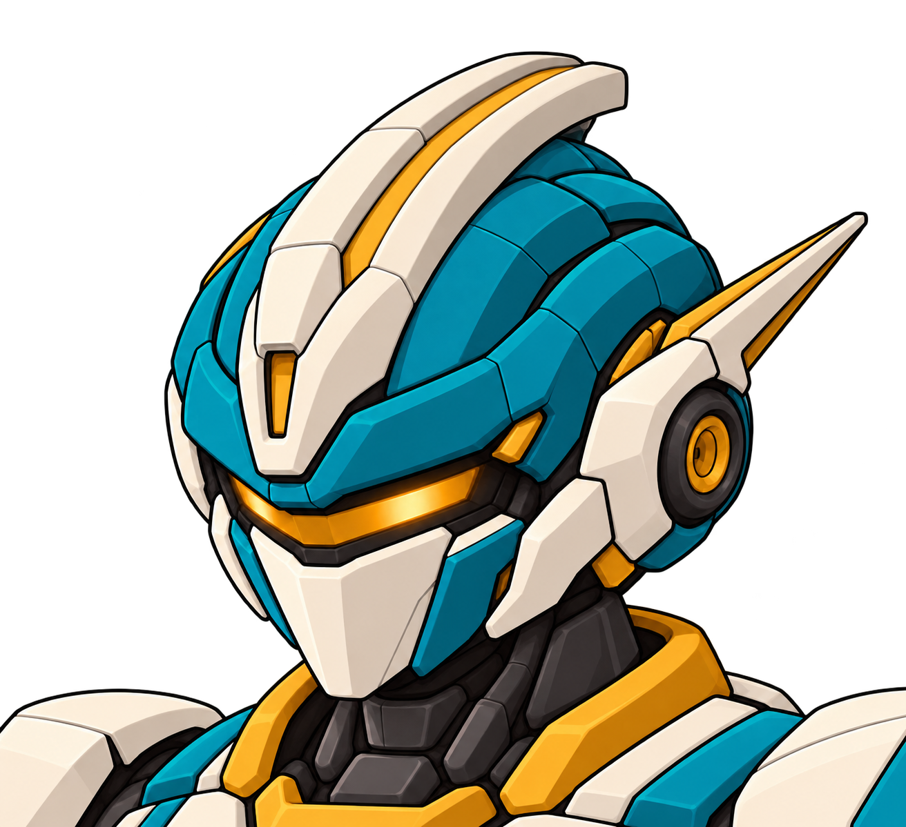
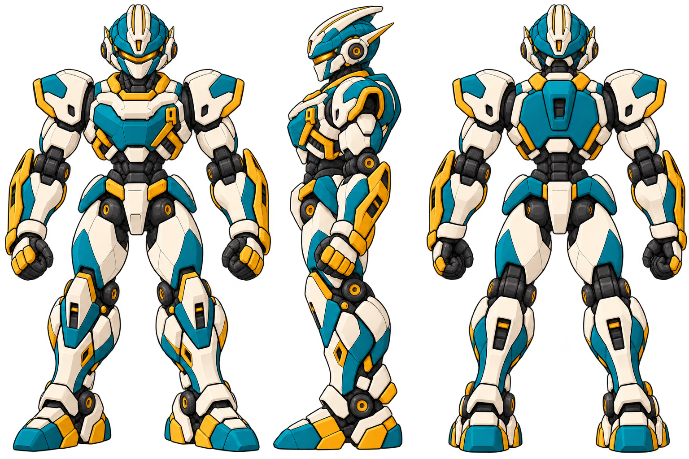

2026.10.19 · 无牌一号 · 整机三视图 R12b
本整机版已被用户要求重做：矮圆、机器河童观感及与王者不同系列。当前R13身体候选与R14头冠四方向在此 →
历史稿：把已确认头部补回同一台无牌
头部设计已确认。按本次“补上无牌三视图”的要求，沿现有颈下机体完成正、侧、背面。新整机图供本轮看稿。
馆守Z继续沿用现有资产；社勇王与人物固定批次保持。

本次统一的部位
| 部位 | 当前表达 | 派生时保持 |
|---|---|---|
| 头冠与侧天线 | 前视两道黄槽，中间为白色实体；侧视近侧槽可见。两侧天线直线后收。 | 背面是后脑与颈后结构；不把眼窗、面罩或额部小黄块转到后脑。 |
| 胸肩与腰 | 象牙白胸桥、青绿胸壳、左胸扣与金色斜撑；腰部留出转动空间。 | 同一套肩甲厚度与胸壳体积，保持竞技体术轮廓。 |
| 前臂与拳 | 金色打击护轨、紧凑拳套和可辨腕口。 | 金色护轨是前臂构件；不另加手持武器，也不放大成社勇王巨拳。 |
| 腿与鞋 | 前侧胫甲与后侧小腿分开；背面显示后膝、跟腱和鞋跟。 | 侧视用同一前后厚度落地，背面不露朝观众的脚尖。 |
这是绘制的结构参考，未由同一三维模型输出；隐面厚度、关节活动和模型同位仍需后续校核。源图也尚未做游戏用切边与导入检查。
已确认的头部依据




本次头部确认范围。此前单中槽解释及错误模型已经废止。
作者检查中发现并修正的背面朝向错误
初稿把前脸、前胫甲和脚趾混进背面。本次只修右侧背视，前面及侧面保留。当前背面已经显示后脑、后膝、小腿后甲与鞋跟。

文件与来源
本次使用内置 image_gen 制作。新三视图未代签用户认可，尚未替换游戏运行资源或发送新一批交接。